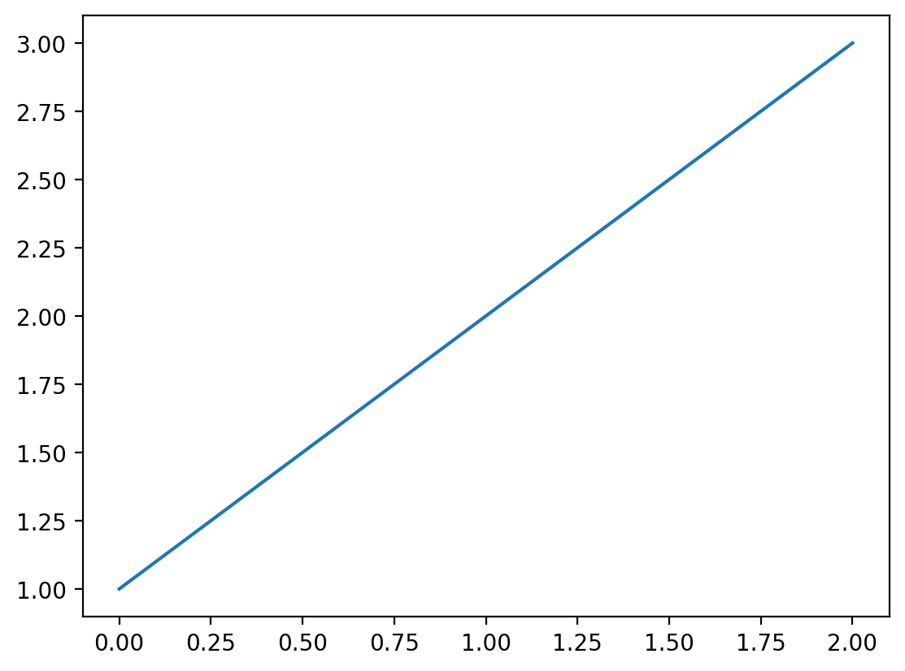

from fastcore.test import *
from base64 import b64decode
from io import BytesIO
from PIL import Imageshell
A shell for running notebook code without a notebook server
ExecutionResult.__repr__
def __repr__(
):
Return repr(self).
ExecutionInfo.__repr__
def __repr__(
):
Return repr(self).
CaptureShell
def CaptureShell(
path:str | Path=None, mpl_format:str='retina', history:bool=False, timeout:Optional[int]=None
):
An enhanced, interactive shell for Python.
CaptureShell.run_cell
def run_cell(
raw_cell, # The code (including IPython code such as %magic functions) to run.
store_history:bool=False, # If True, the raw and translated cell will be stored in IPython's
history. For user code calling back into IPython's machinery, this
should be set to False.
silent:bool=False, # If True, avoid side-effects, such as implicit displayhooks and
and logging. silent=True forces store_history=False.
shell_futures:bool=True, # If True, the code will share future statements with the interactive
shell. It will both be affected by previous __future__ imports, and
any __future__ imports in the code will affect the shell. If False,
__future__ imports are not shared in either direction.
cell_id:NoneType=None, # A unique identifier for the cell. This is used in the messaging system
to match output with execution requests and for tracking cell execution
history across kernel restarts. In notebook contexts, this is typically
a UUID generated by the frontend. If None, the kernel may generate an
internal identifier or proceed without cell tracking capabilities.
stdout:bool=True, stderr:bool=True, display:bool=True, timeout:NoneType=None, verbose:bool=False
):
Run a complete IPython cell.
s = CaptureShell(mpl_format='retina')s.run_cell('a=1');{ 'display_objects': [],
'exception': None,
'quiet': False,
'result': result: None; err: None; info: <cell: a=1; id: None>,
'stderr': '',
'stdout': ''}o = s.run_cell('print(a)')
o{ 'display_objects': [],
'exception': None,
'quiet': False,
'result': result: None; err: None; info: <cell: print(a); id: None>,
'stderr': '',
'stdout': '1\n'}o = s.run_cell('from warnings import warn; warn("1")')
o{ 'display_objects': [],
'exception': None,
'quiet': False,
'result': result: None; err: None; info: <cell: from warnings import warn; warn("1"); id: None>,
'stderr': '<ipython-input-1-a51443ae013a>:1: UserWarning: 1\n'
' from warnings import warn; warn("1")\n',
'stdout': ''}o = s.run_cell('1')
o{ 'display_objects': [],
'exception': None,
'quiet': False,
'result': result: 1; err: None; info: <cell: 1; id: None>,
'stderr': '',
'stdout': ''}o = s.run_cell('from IPython.display import Markdown,display; print(0); display(Markdown("*2*")); Markdown("*1*")')
o{ 'display_objects': [<IPython.utils.capture.RichOutput object>],
'exception': None,
'quiet': False,
'result': result: <IPython.core.display.Markdown object>; err: None; info: <cell: from IPython.display import Markdown,display; print(0); display(Markdown("*2*")); Markdown("*1*"); id: None>,
'stderr': '',
'stdout': '0\n'}o.result.result1
o.display_objects[0]2
o = s.run_cell('1;')
o{ 'display_objects': [],
'exception': None,
'quiet': True,
'result': result: 1; err: None; info: <cell: 1;; id: None>,
'stderr': '',
'stdout': ''}o = s.run_cell('import matplotlib.pyplot as plt; plt.plot([1,2,3])')
o{ 'display_objects': [<IPython.utils.capture.RichOutput object>],
'exception': None,
'quiet': False,
'result': result: [<matplotlib.lines.Line2D object>]; err: None; info: <cell: import matplotlib.pyplot as plt; plt.plot([1,2,3]); id: None>,
'stderr': '',
'stdout': ''}o.result.result[0]o.display_objects[0]
o = s.run_cell('''
import pandas as pd
pd.DataFrame({'A': [1, 2], 'B': [3, 4]})''')
o{ 'display_objects': [],
'exception': None,
'quiet': False,
'result': result: A B
0 1 3
1 2 4; err: None; info: <cell:
import pandas as pd
pd.DataFrame({'A': [1, 2], 'B': [3, 4]}); id: None>,
'stderr': '',
'stdout': ''}o.result.result| A | B | |
|---|---|---|
| 0 | 1 | 3 |
| 1 | 2 | 4 |
o = s.run_cell('1/0')
o{ 'display_objects': [],
'exception': ZeroDivisionError('division by zero'),
'quiet': False,
'result': result: None; err: division by zero; info: <cell: 1/0; id: None>,
'stderr': '',
'stdout': '\x1b[31m---------------------------------------------------------------------------\x1b[39m\n'
'\x1b[31mZeroDivisionError\x1b[39m '
'Traceback (most recent call last)\n'
'\x1b[36mFile '
'\x1b[39m\x1b[32m<ipython-input-1-9e1622b385b6>:1\x1b[39m\n'
'\x1b[32m----> \x1b[39m\x1b[32m1\x1b[39m '
'\x1b[32;43m1\x1b[39;49m\x1b[43m/\x1b[49m\x1b[32;43m0\x1b[39;49m\n'
'\n'
'\x1b[31mZeroDivisionError\x1b[39m: division by zero\n'}Testing errors caught after exec:
o = s.run_cell('import time; time.sleep(2)', timeout=1)
test_eq(type(o['exception']), TimeoutError)Testing errors caught before exec:
o = s.run_cell('print(', timeout=1)
test_eq(isinstance(o['exception'], SyntaxError), True)
o = s.run_cell("def foo():\npass")
test_eq(isinstance(o['exception'], IndentationError), True)
o = s.run_cell("if True:\n\tpass\n pass")
test_eq(isinstance(o['exception'], TabError), True)Cells / run
format_exc
def format_exc(
e
):
Format exception e as a string list
NbResult
def NbResult(
args:VAR_POSITIONAL, kwargs:VAR_KEYWORD
):
Built-in mutable sequence.
If no argument is given, the constructor creates a new empty list. The argument must be an iterable if specified.
CaptureShell.run
def run(
code:str, # Python/IPython code to run
stdout:bool=True, # Capture stdout and save as output?
stderr:bool=True, # Capture stderr and save as output?
timeout:Optional[int]=None, # Shell command will time out after {timeout} seconds
verbose:bool=False, # Show stdout/stderr during execution
):
Run code, returning a list of all outputs in Jupyter notebook format
s = CaptureShell()s.run("print(1)")[{'name': 'stdout', 'output_type': 'stream', 'text': ['1\n']}]Code can include magics and ! shell commands:
o = s.run("%time 1+1")
o[{'name': 'stdout',
'output_type': 'stream',
'text': ['CPU times: user 1 us, sys: 1 us, total: 2 us\n',
'Wall time: 4.05 us\n']},
{'data': {'text/plain': ['2']},
'metadata': {},
'output_type': 'execute_result',
'execution_count': None}]The result of the last successful execution is stored in result:
s.result2A trailing ; stops the result from being captured:
s.run("1+2;")[]o = s.run("1/0")
o[{'name': 'stdout',
'output_type': 'stream',
'text': ['\x1b[31m---------------------------------------------------------------------------\x1b[39m\n',
'\x1b[31mZeroDivisionError\x1b[39m Traceback (most recent call last)\n',
'\x1b[36mFile \x1b[39m\x1b[32m<ipython-input-1-9e1622b385b6>:1\x1b[39m\n',
'\x1b[32m----> \x1b[39m\x1b[32m1\x1b[39m \x1b[32;43m1\x1b[39;49m\x1b[43m/\x1b[49m\x1b[32;43m0\x1b[39;49m\n',
'\n',
'\x1b[31mZeroDivisionError\x1b[39m: division by zero\n']},
{'ename': 'ZeroDivisionError',
'evalue': 'division by zero',
'output_type': 'error',
'traceback': ['Traceback (most recent call last):\n',
' File "/home/radek/miniconda3/envs/kaggle/lib/python3.11/site-packages/IPython/core/interactiveshell.py", line 3672, in run_code\n exec(code_obj, self.user_global_ns, self.user_ns)\n',
' File "<ipython-input-1-9e1622b385b6>", line 1, in <module>\n 1/0\n ~^~\n',
'ZeroDivisionError: division by zero\n']}]This is how IPython formats exceptions internally:
from IPython.core.ultratb import VerboseTBwith warnings.catch_warnings():
warnings.filterwarnings("ignore", category=DeprecationWarning)
formatter = VerboseTB(color_scheme='Linux')try: f()
except Exception as e:
ex = e
print(formatter.text(type(e), e, e.__traceback__))---------------------------------------------------------------------------
NameError Traceback (most recent call last)
Cell In[35], line 1
----> 1 try: f()
2 except Exception as e:
3 ex = e
NameError: name 'f' is not defineds.run("import time; time.sleep(0.1); print('no timeout')", timeout=1)[{'name': 'stdout', 'output_type': 'stream', 'text': ['no timeout\n']}]o = s.run("import time; time.sleep(1.1)", timeout=1)
o[0]['text'][:2]['\x1b[31m---------------------------------------------------------------------------\x1b[39m\n',
'\x1b[31mTimeoutError\x1b[39m Traceback (most recent call last)\n']o1 = s.run('from IPython.display import Markdown,display; print(0); print(1); display(Markdown("*2*")); Markdown("*1*")')
o1[{'name': 'stdout', 'output_type': 'stream', 'text': ['0\n', '1\n']},
{'data': {'text/plain': ['<IPython.core.display.Markdown object>'],
'text/markdown': ['*2*']},
'metadata': {},
'output_type': 'display_data'},
{'data': {'text/plain': ['<IPython.core.display.Markdown object>'],
'text/markdown': ['*1*']},
'metadata': {},
'output_type': 'execute_result',
'execution_count': None}]CaptureShell.run_async
def run_async(
code:str, # Python/IPython code to run
stdout:bool=True, # Capture stdout and save as output?
stderr:bool=True, # Capture stderr and save as output?
timeout:Optional[int]=None, # Shell command will time out after {timeout} seconds
verbose:bool=False, # Show stdout/stderr during execution
):
await s.run_async("1+1")[{'data': {'text/plain': ['2']},
'metadata': {},
'output_type': 'execute_result',
'execution_count': None}]render_outputs
def render_outputs(
outputs, ansi_renderer:function=_strip, include_imgs:bool=True, pygments:bool=False, md_tfm:function=noop,
html_tfm:function=noop
):
HTML(render_outputs(o))---------------------------------------------------------------------------
TimeoutError Traceback (most recent call last)
File <ipython-input-1-a5c3817716b6>:1
----> 1 import time; time.sleep(1.1)
Cell In[6], line 7, in run_cell.<locals>.handler(*args)
----> 7 def handler(*args): raise TimeoutError()
TimeoutError:
We can use ansi2html to convert from ANSI to HTML for color rendering. You need some css styles for the colors to render properly. Jupyter already has these built in so it’s not neccessary here, but if you plan on using this in another web app you will need to ensure that css styling is included.
HTML(render_outputs(o, ansi2html))---------------------------------------------------------------------------
TimeoutError Traceback (most recent call last)
File <ipython-input-1-a5c3817716b6>:1
----> 1 import time; time.sleep(1.1)
Cell In[6], line 7, in run_cell.<locals>.handler(*args)
----> 7 def handler(*args): raise TimeoutError()
TimeoutError:
Images and matplotlib figures are captured:
res = s.run('''import matplotlib.pyplot as plt
plt.figure(figsize=(2,1))
plt.plot([1,2,4]);''')
HTML(render_outputs(res))![]()
If an exception is raised then the exception type, object, and stacktrace are stored in exc:
o = s.run('raise Exception("Oops")')
o[{'name': 'stdout',
'output_type': 'stream',
'text': ['\x1b[31m---------------------------------------------------------------------------\x1b[39m\n',
'\x1b[31mException\x1b[39m Traceback (most recent call last)\n',
'\x1b[36mFile \x1b[39m\x1b[32m<ipython-input-1-01648acb07bd>:1\x1b[39m\n',
'\x1b[32m----> \x1b[39m\x1b[32m1\x1b[39m \x1b[38;5;28;01mraise\x1b[39;00m \x1b[38;5;167;01mException\x1b[39;00m(\x1b[33m"\x1b[39m\x1b[33mOops\x1b[39m\x1b[33m"\x1b[39m)\n',
'\n',
'\x1b[31mException\x1b[39m: Oops\n']},
{'ename': 'Exception',
'evalue': 'Oops',
'output_type': 'error',
'traceback': ['Traceback (most recent call last):\n',
' File "/home/radek/miniconda3/envs/kaggle/lib/python3.11/site-packages/IPython/core/interactiveshell.py", line 3672, in run_code\n exec(code_obj, self.user_global_ns, self.user_ns)\n',
' File "<ipython-input-1-01648acb07bd>", line 1, in <module>\n raise Exception("Oops")\n',
'Exception: Oops\n']}]s.excException('Oops')CaptureShell.cell
def cell(
cell, stdout:bool=True, stderr:bool=True, verbose:bool=False
):
Run cell, skipping if not code, and store outputs back in cell
clean = Path('../tests/clean.ipynb')
nb = read_nb(clean)
c = nb.cells[1]
c{ 'cell_type': 'code',
'execution_count': None,
'id': 'b123d6d0',
'idx_': 1,
'metadata': {},
'outputs': [],
'source': 'print(1)\n2'}s.cell(c)
c.outputs[{'name': 'stdout', 'output_type': 'stream', 'text': ['1\n']},
{'data': {'text/plain': ['2']},
'metadata': {},
'output_type': 'execute_result',
'execution_count': None}]find_output
def find_output(
outp, # Output from `run`
ot:str='execute_result', # Output_type to find
):
Find first output of type ot in CaptureShell.run output
find_output(c.outputs)['data']{'text/plain': ['2']}find_output(c.outputs, 'stream')['text']['1\n']out_exec
def out_exec(
outp
):
Get data from execution result in outp.
out_exec(c.outputs)'2'out_stream
def out_stream(
outp
):
Get text from stream in outp.
out_stream(c.outputs)'1'out_error
def out_error(
outp
):
Get traceback from error in outp.
CaptureShell.run_all
def run_all(
nb, # A notebook read with `nbclient` or [`read_nb`](https://AnswerDotAI.github.io/execnb/nbio.html#read_nb)
exc_stop:bool=False, # Stop on exceptions?
preproc:callable=_false, # Called before each cell is executed
postproc:callable=_false, # Called after each cell is executed
inject_code:str | None=None, # Code to inject into a cell
inject_idx:int=0, # Cell to replace with `inject_code`
verbose:bool=False, # Show stdout/stderr during execution
):
Run all cells in nb, stopping at first exception if exc_stop
nb.cells[2].outputs[]s.run_all(nb)
nb.cells[2].outputs[{'data': {'text/plain': ['<IPython.core.display.Markdown object>'],
'text/markdown': ["This is *bold*. Here's a [link](https://www.fast.ai)."]},
'metadata': {},
'output_type': 'execute_result',
'execution_count': None}]With exc_stop=False (the default), execution continues after exceptions, and exception details are stored into the appropriate cell’s output:
nb.cells[-1].source'raise Exception("Oopsie!")'nb.cells[-1].outputs[{'name': 'stdout',
'output_type': 'stream',
'text': ['\x1b[31m---------------------------------------------------------------------------\x1b[39m\n',
'\x1b[31mException\x1b[39m Traceback (most recent call last)\n',
'\x1b[36mFile \x1b[39m\x1b[32m<ipython-input-1-1c97c1d317ab>:1\x1b[39m\n',
'\x1b[32m----> \x1b[39m\x1b[32m1\x1b[39m \x1b[38;5;28;01mraise\x1b[39;00m \x1b[38;5;167;01mException\x1b[39;00m(\x1b[33m"\x1b[39m\x1b[33mOopsie!\x1b[39m\x1b[33m"\x1b[39m)\n',
'\n',
'\x1b[31mException\x1b[39m: Oopsie!\n']},
{'ename': 'Exception',
'evalue': 'Oopsie!',
'output_type': 'error',
'traceback': ['Traceback (most recent call last):\n',
' File "/home/radek/miniconda3/envs/kaggle/lib/python3.11/site-packages/IPython/core/interactiveshell.py", line 3672, in run_code\n exec(code_obj, self.user_global_ns, self.user_ns)\n',
' File "<ipython-input-1-1c97c1d317ab>", line 1, in <module>\n raise Exception("Oopsie!")\n',
'Exception: Oopsie!\n']}]With exc_stop=True, exceptions in a cell are raised and no further processing occurs:
try: s.run_all(nb, exc_stop=True)
except Exception as e: print(f"got exception: {e}")got exception: Oopsie!We can pass a function to preproc to have it run on every cell. It can modify the cell as needed. If the function returns True, then that cell will not be executed. For instance, to skip the cell which raises an exception:
nb = read_nb(clean)
s.run_all(nb, preproc=lambda c: 'raise' in c.source)This cell will contain no output, since it was skipped.
nb.cells[-1].outputs[]nb.cells[1].outputs[{'name': 'stdout', 'output_type': 'stream', 'text': ['1\n']},
{'data': {'text/plain': ['2']},
'metadata': {},
'output_type': 'execute_result',
'execution_count': None}]You can also pass a function to postproc to modify a cell after it is executed.
CaptureShell.execute
def execute(
src:str | Path, # Notebook path to read from
dest:str | None=None, # Notebook path to write to
exc_stop:bool=False, # Stop on exceptions?
preproc:callable=_false, # Called before each cell is executed
postproc:callable=_false, # Called after each cell is executed
inject_code:str | None=None, # Code to inject into a cell
inject_path:str | Path | None=None, # Path to file containing code to inject into a cell
inject_idx:int=0, # Cell to replace with `inject_code`
verbose:bool=False, # Show stdout/stderr during execution
):
Execute notebook from src and save with outputs to `dest
This is a shortcut for the combination of read_nb, CaptureShell.run_all, and write_nb.
s = CaptureShell()
try:
s.execute(clean, 'tmp.ipynb')
print(read_nb('tmp.ipynb').cells[1].outputs)
finally: Path('tmp.ipynb').unlink()[{'name': 'stdout', 'output_type': 'stream', 'text': ['1\n']}, {'data': {'text/plain': ['2']}, 'execution_count': None, 'metadata': {}, 'output_type': 'execute_result'}]p = Path.home()/'git'/'fastcore'/'nbs'
n = p/'03a_parallel.ipynb'CaptureShell.prettytb
def prettytb(
fname:str | Path=None, # filename to print alongside the traceback
):
Show a pretty traceback for notebooks, optionally printing fname.
If an error occurs while running a notebook, you can retrieve a pretty version of the error with the prettytb method:
s = CaptureShell()
try:
s.execute('../tests/error.ipynb', exc_stop=True)
except:
print(s.prettytb())AssertionError in ../tests/error.ipynb:
===========================================================================
While Executing Cell #2:
Traceback (most recent call last):
File "/tmp/ipykernel_1087357/1421292703.py", line 3, in <module>
s.execute('../tests/error.ipynb', exc_stop=True)
File "/tmp/ipykernel_1087357/3276016238.py", line 19, in execute
self.run_all(nb, exc_stop=exc_stop, preproc=preproc, postproc=postproc,
File "/tmp/ipykernel_1087357/3244179380.py", line 20, in run_all
if self.exc and exc_stop: raise self.exc from None
^^^^^^^^^^^^^^^^^^^^^^^^
File "/home/radek/miniconda3/envs/kaggle/lib/python3.11/site-packages/IPython/core/interactiveshell.py", line 3672, in run_code
exec(code_obj, self.user_global_ns, self.user_ns)
File "<ipython-input-1-b968a57a586e>", line 3, in <module>
foo()
File "/home/radek/workspace/execnb/tests/err.py", line 2, in foo
assert 13 == 98
^^^^^^^^
AssertionError
If you pass inject_code to CaptureShell.execute or CaptureShell.run_all, the source of nb.cells[inject_idx] will be replaced with inject_code. By default, the first cell is replaced. For instance consider this notebook:
nb = read_nb('../tests/params.ipynb')
for c in nb.cells: print('- ',c.source)- a=1
- print(a)We can replace the first cell with a=2 by passing that as inject_code, and the notebook will run with that change:
nb = read_nb('../tests/params.ipynb')
s.run_all(nb, inject_code="a=2")
list(nb.cells)[{'cell_type': 'code',
'execution_count': None,
'id': 'a63ce885',
'metadata': {},
'outputs': [],
'source': 'a=2',
'idx_': 0},
{'cell_type': 'code',
'execution_count': None,
'id': 'ea528db5',
'metadata': {},
'outputs': [{'name': 'stdout', 'output_type': 'stream', 'text': ['2\n']}],
'source': 'print(a)',
'idx_': 1}]This can be used with CaptureShell.execute to parameterise runs of models in notebooks. Place any defaults for configuration code needed in the first cell, and then when running execute pass in new parameters as needed in inject_code. To replace only some of the defaults, leave an empty cell as the second cell, and inject code using inject_idx=1 to replace the empty second cell with code that overrides some of the defaults set in the first cell. When using execute you can pass inject_path instead of inject_code to read the injected code from a file.
exec_nb
def exec_nb(
src:str, # Notebook path to read from
dest:str='', # Notebook path to write to
exc_stop:bool=False, # Stop on exceptions?
inject_code:str=None, # Code to inject into a cell
inject_path:str=None, # Path to file containing code to inject into a cell
inject_idx:int=0, # Cell to replace with `inject_code`
verbose:bool=False, # Show stdout/stderr during execution
):
Execute notebook from src and save with outputs to dest
This is the command-line version of CaptureShell.execute. Run exec_nb -h from the command line to see how to pass arguments. If you don’t pass dest then the output notebook won’t be saved; this is mainly useful for running tests.
SmartCompleter
def SmartCompleter(
shell, # a pointer to the ipython shell itself. This is needed
because this completer knows about magic functions, and those can
only be accessed via the ipython instance.
namespace:NoneType=None, # an optional dict where completions are performed.
jedi:bool=False
):
Extension of the completer class with IPython-specific features
cc = SmartCompleter(get_ipython())
def test_set(a,b): return test_eq(set(a), set(b))
class _f:
def __init__(self): self.bar,self.baz,self.room = 0,0,0
foo = _f()
assert set(cc("b")).issuperset(['bool', 'bytes'])
test_set(cc("foo.b"), ['bar', 'baz'])
test_set(cc("x=1; x = foo.b"), ['bar', 'baz'])
test_set(cc("ab"), ['abs'])
test_set(cc("b = ab"), ['abs'])
test_set(cc(""), [])
test_set(cc("foo."), ['bar', 'baz', 'room'])
test_set(cc("nonexistent.b"), [])
test_set(cc("foo.nonexistent.b"), [])
assert set(cc("import ab")).issuperset(['abc'])
test_set(cc("from abc import AB"), ['ABC', 'ABCMeta'])s = CaptureShell()
cc = SmartCompleter(s)
s.run('''def captures(pat, s, n, **kw):
return 1''')
cc('captures(')['n=', 'pat=', 's=']CaptureShell.complete
def complete(
c
): # The actual text that was completed.
Return the completed text and a list of completions.
s = CaptureShell()
s.run('a=1')
s.complete('a.b')['bit_count', 'bit_length']s.run('import re')
s.complete('re.compile(')['flags=', 'pattern=']